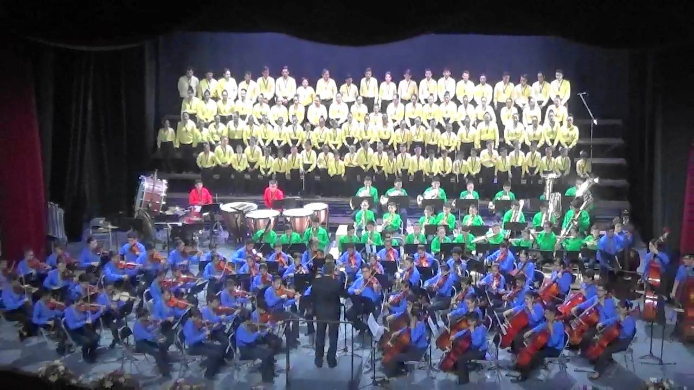
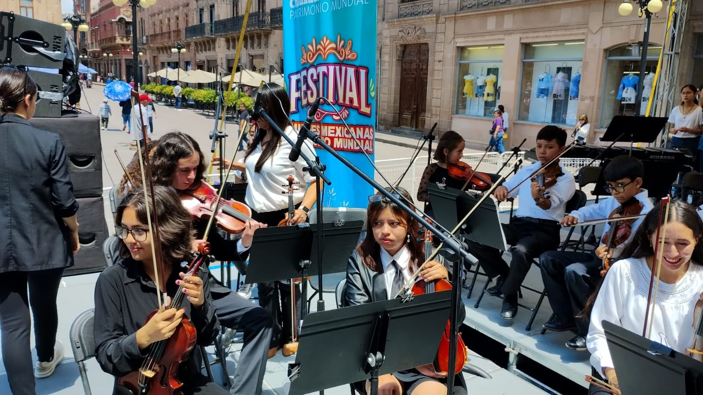
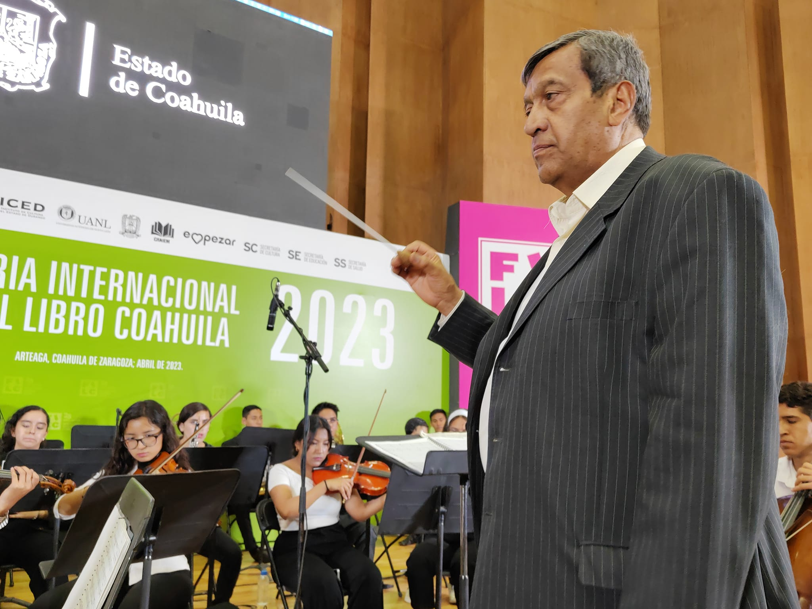
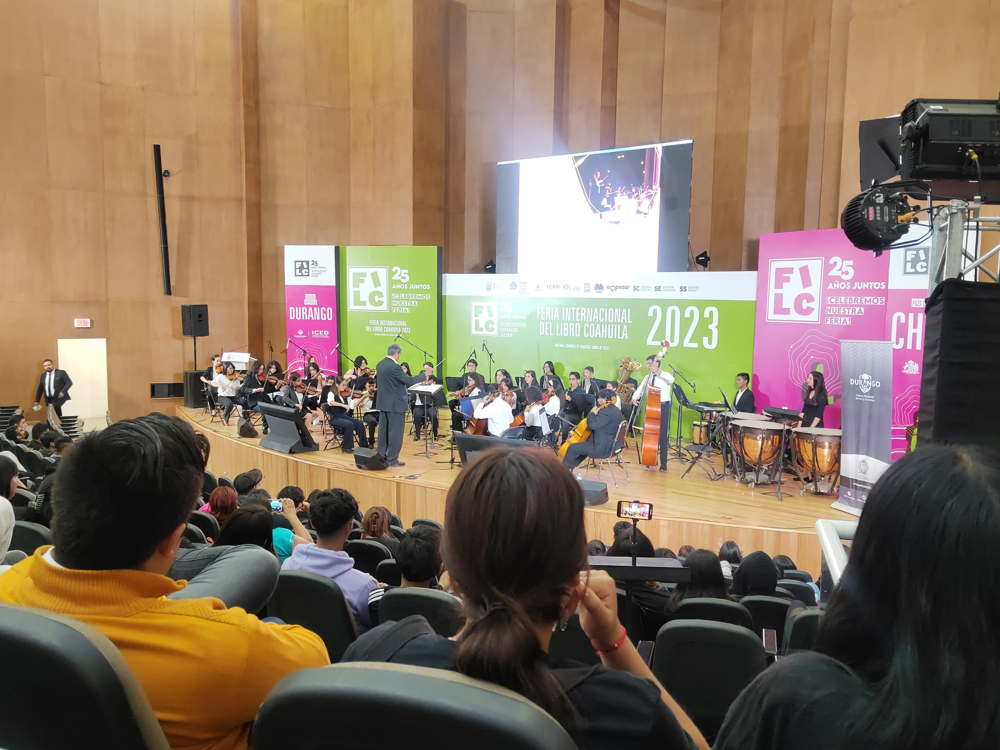
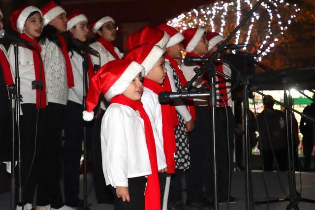
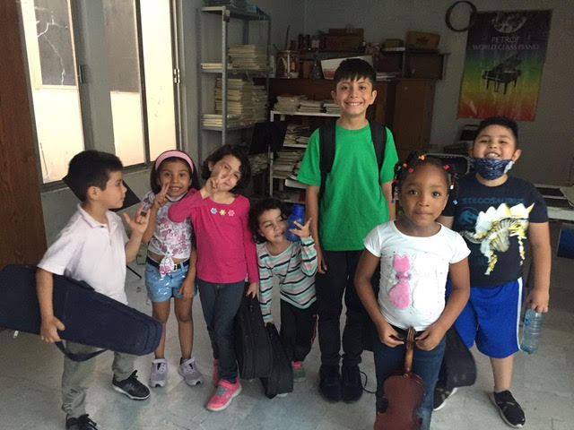
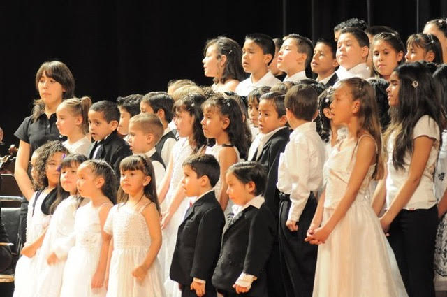
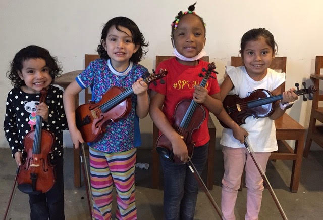

|  | La orquesta sinfónica Riardo Castro. Fundada en el 2018 por el Maestro Severino Ceniceros Najera. Esta lleva una trayectoria desde antes del 2018, cuando se habian implementados los programas llamados Esperanza Azteca; al finalizar estos programas nos aliamos al gobierno por medio del IMAC (Instituto Municipal de Arte y Cultura) donde debutamos en el 2018. La visión o el proyecto de este tipo de apoyo es el que nuestra juventud se vea involucrada en aspectos culturales, asi mismo que se tenga en cuenta el trrabajo involucrado en este tip de proyectos para crear una sociedad más conciente. Esta orquesta debutó no hasta un año después (2019) en el que fue creciendo logrando tener muchas participaciones en varios eventos a lo largo del tiempo. Unas de las participaciones más sobresalientes han sido sus eventos en otras ciudades como Saltillo, en la que la Orquesta fue el último número y cierre en la feria del libro. La otra participación fue en la ciudad de San Luis Potosi, presentandose junto con la orquesta de aquella misma ciudad.
 |
|
 | |||||||
|  | El maestro Severino Ceniceros es el fundadr de la Orquesta Juvenil, siendo el director y maestro de la única orquesta juvenil del Estado de Durango. El maestro, habiendo dedicado su vida a la enseñanza de la música, a puesto a estos jóvenes para representar a Durango en varias ocaciones, siempre cerrando en broche de oro. Junto con el maestro destacan otros 3 maestros co los que, sin su ayuda esta orquesta no tendria todos estos jóvenes que la conforman hoy en día.
|
|||||||||
CONCIERTOS ESPERADOS Y OTROS GRUPOS |
||||||||||
En este apartado se daran a conocer, próximamente, fechas de conciertos próximos. Esta orquesta esta compuesta solamente de jóvenes y adolescentes, sino que esta orquesta tiene su propio coro infantil, el cual a tenido participaciones muy importantes entre conciertos que se procuran. Estos niños estan entre la edad de 5 a 9 años, asi mismo este es un grupo particular el cual hay clases abiertas. Se dará información más adelante.
|
||||||||||
|  | ||||||||||
|  |  |  | ||||||||
INFORMACIÓN DE CLASES INFANTILES Y ORQUESTA En este espacio te dare a conocer horarios en los que puedes ir a ver o probar si es que te interesaria ser participe de cualquiera de nuestros grupos. NO TE PREOCUPES POR NO TENER INSTRUENTO PROPIO!!!!! AQUI TE LO PRESTAMOS!!!!! ORQUESTA: 6-8 Martes, Jueves y Sábado. NIÑOS CHIQUITOS: 6-8 Lunes, Miércoles y Viernes
|
Whats app: 6181327335 Facebook: Osea Ricardo Castro Durango Dirección: Elorreaga y Patoni #130 nte.
|
|||||||||